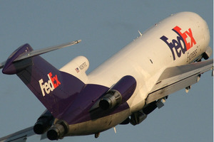
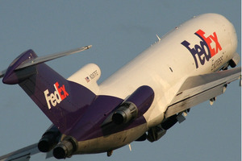
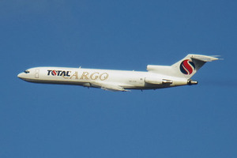
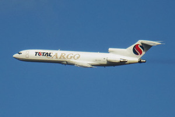
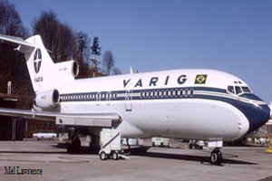
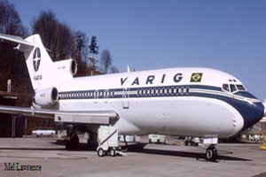

História
O Boeing 727 é uma aeronave de fuselagem estreita produzido pela Boeing Commercial Airplanes. Após a introdução do Boeing 707 em 1958, a Boeing atendeu à demanda por voos mais curtos em aeroportos menores. Em 5 de dezembro de 1960, o 727 foi lançado com 40 pedidos cada da United Airlines e Eastern Air Lines. O primeiro 727-100 foi apresentado em 27 de novembro de 1962 e seu primeiro voo foi em 9 de fevereiro de 1963, entrando em serviço na Eastern em 1° de fevereiro de 1964. O único trijato da Boeing é alimentado por motores Pratt & Whitney JT8D turbofans abaixo de uma cauda em T, uma em cada lado da fuselagem e um no centro através de um duto em S. Ele compartilha sua seção transversal da cabine da fuselagem superior e o cockpit com o 707. O 727-100 tem 133,6 pés (40,6 m) de comprimento, normalmente transporta 106 passageiros em duas classes com mais de 4 150 km, ou 129 em uma única classe. Lançado em 1965, o 727-200 alongado voou em julho de 1967 e entrou em serviço com a Northeast Airlines em dezembro daquele ano. Essa variante é 20 pés (20m) mais longa e normalmente transportava 134 passageiros em duas classes acima de 2 550 nmi (4.720 km), ou 155 em uma única classe. Além da acomodação do avião, foram oferecidos um cargueiro e uma versão conversível Quick Change. O 727 foi usado para muitos voos domésticos e alguns voos internacionais dentro de seu alcance. Os regulamentos de ruído dos aeroportos levaram a instalações de hush kit. Seu último voo comercial de passageiros ocorreu em janeiro de 2019.[2] Foi substituído pelo Boeing 757 e variantes maiores do Boeing 737. Em maio de 2020, um total de 13 modelos do Boeing 727 ainda estavam em serviço comercial cargueiro em 6 companhias aéreas, inclusive um em uso governamental e outro em uso privado. Houve 118 acidentes e incidentes envolvendo o Boeing 727. Até o fim da produção em setembro de 1984, 1.832 unidades foram construídas.


 



 

 

Quantidade de Passageiros:
Peso Maximo Decolagem:
Quantidade Produzidos:
Primeiro Voo:
Comprimento:
Envergadura:
Variantes de Modelos: